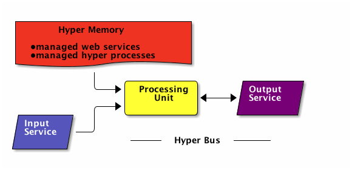
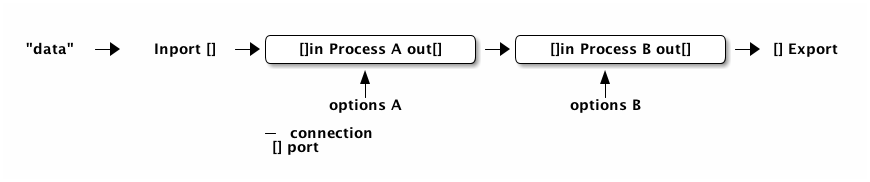
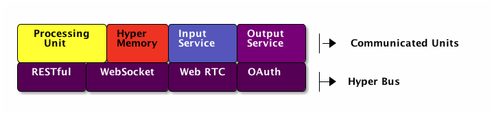

Internet Combinator Language
1 Introduction
Internet Combinator Language, iclang in short, is a cordination language which has configurable modularity for compositing things of internet.
It is designed to run on Tim Berners Lee computer.
2 Tim Berners Lee Computer
Luca Cardelli 與 Rowan Davies 認為 Internet 上所有電腦可被視為一抽象電腦， 相對於 John von Neumann Unit 模型，並建議稱之為 Tim-Berners Lee 電腦。
隨者時代的演進，不同 Web Services 之間的存取，權限管理介面漸漸一致，因此本文基於前者的想法， 延伸其完整的電腦架構與定義。
由於其極度分散式的架構，資料讀取的特性為
- 並發(concurency)
- 平行(parallelism)
- 有延遲(delay)
- 不一致的值(inconsist)
- 須考慮容錯(High Faliure)
- 與 John von Neumann 模型的比較
John von Neumann Unit Tim Berners Lee Unit CPU Processing Unit Memory Hyper Memory Bus Hyper Bus Input Device Input Service Output Device Ouput Service 
- Hyper Memory

John von Neumann Unit Tim Berners Lee Unit Memory Page Web Service Memory Address URL Data Value Process Hyper Process
2.1 Reference
URL 是某種網路上的索引，只是每次讀取得值不總是一致，除此之外讀取還可能會失敗，有延遲。
3 Hyper Process
執行中的 Hyper Script，用來讀寫, 轉換 Web Services 的資料之類的操作。
3.1 Processing Unit
Internet 裏的某一台電腦均可當成處理單元，執行 Hyper Script 而其檔案系統跟記憶體可看做成這一抽象電腦的快取。
3.2 Hyper Bus

3.3 Input Service
A web service like a shell.
3.4 Output Service
A target service that user want to have.
- production service.
- management service.
4 Models
4.1 Static Phase
The control logic is denoted in a json file like abstract syntax tree as below:
{
"properties":{
"name":"The hyper script name"
},
"inports":[],
"exports":[],
"processes":{
"the process id":{
"component":"which componet will be used",
"options":{
"opt1": "the value of option1"
}
},
"second process id":{
"....":"...."
}
},
"connections:":[
{
"data":"data",
"tgt":{
"process":"the process id",
"port":"in"
}
},
{
"src":{
"process":"the process id",
"port":"out"
},
"tgt":{
"process":"second process id"
"port":"in"
}
}
]
}
This file is called Hyper Script and represents the following relationships.

4.2 Dynamic Phase
- Information Stream
An entity that packed data, state passed throw the process pipeline.
- Initial Information Stream
predefined data stream sent to a defined inport of a Process
- Hyper Process
An instance of a Hyper Script.
- Process
An instance of a component that is running as part of Hyper Process, to recive Information Streams and then do someting and then pass to next process.
- Socket
The place in a process that another process could attach, in order to send or recive information stream.
A process can have mutiple input/output sockets.
- Connection
connection between an outport of a Process, and inport of another Process